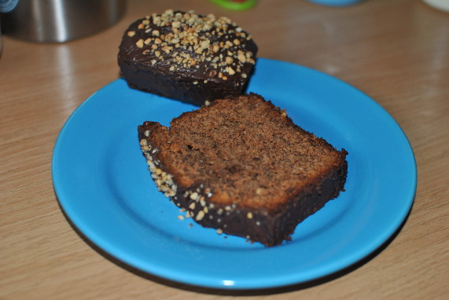

Haselnusskuchen

- Zubereitung: ca. 15 Minuten
- Backzeit: ca. 70 Minuten
- Für 1 Kastenform (2 Liter Inhalt)
Zutaten
- 250 g Zartbitter-Kuvertüre
- 200 g flüssiger Honig
- 3 Eier
- 250 g weiche Butter
- 250 g Mehl
- 1 Pck. Backpulver
- 1 Pck. Vanillezucker
- 200 g gemahlene Haselnüsse
- 100 ml roter Traubensaft
- 3 EL Haselnusskrokant
- bei Bedarf Milch
Zubereitung
- Den Backofen auf 180° Celsius (Umluft 160° Celsius) vorheizen. 100 g Kuvertüre reiben. Honig, Eier und Butter schaumig rühren. Das Mehl mit dem Backpulver mischen. Mit dem Vanillezucker, der geriebenen Kuvertüre und den Haselnüssen verrühren.
Den Honig-Ei-Mix unterheben. Den Traubensaft unterrühren. Ist der Teig zu fest, ein bis drei Löffel Milch dazugeben.
- Den Teig in eine gefettete Form füllen und etwa 70 Minuten backen. Eventuell mit Alu-Folie abdecken.
- Den Kuchen abgekühlte aus der Form stürzen. Die übrige Kuvertüre schmelzen, den Kuchen damit bestreichen. Den Krokant darüber streuen.